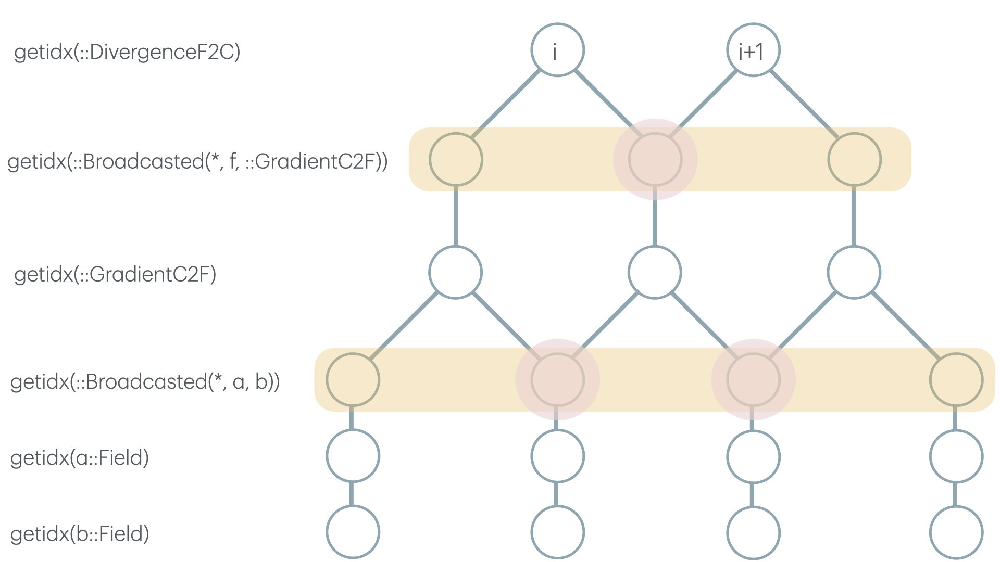

Shared memory design
ClimaCore stencil operators support staggered (or collocated) finite difference and interpolation operations. For example, the DivergenceF2C operator takes an argument that lives on the cell faces and the resulting divergence calculation lives on the cell centers. Such operations are effectively matrix-vector multiplication and are often a significant portion of the runtime cost for users.
Here, we outline an optimization, shared memory (or, "shmem" for short), that we use to improve the performance of these operations.
Motivation
A naive and simplified implementation of this operation looks like div[i] = (f [i+1] - f[i]) / dz[i]. Such a calculation on the gpu (or cpu) requires f[i] be read from global memory to compute the result of div[i] and div[i-1]. Not to mention, if f is a Broadcasted object (Broadcasted objects behave like arrays, and support f[i] behavior), then f[i] may require several reads and or computations.
Reading data from global memory is often the main bottleneck for bandwidth-limited cuda kernels. As such, we use shmem to reduce the number of global memory reads (and compute) in our kernels.
High-level design
The high-level view of the design is:
- The
bc::StencilBroadcastedtype has aworkfield, which is used to store shmem for thebc.opoperator. The element type of thework(or parts ofworkif there are multiple parts) is the type returned by thebc.op'sOperator.return_eltype. - Recursively reconstruct the broadcasted object, allocating shmem for each
StencilBroadcastedalong the way that supports shmem (different operators require different arguments, and therefore different types and amounts of shmem). - Recursively fill the shmem for all
StencilBroadcasted. This is done by reading the argument data fromgetidx. See the section discussion below for more details. - The destination field is filled with the result of
getidx(as it is without shmem), except that we overloadgetidx(for supportedStencilBroadcastedtypes) to retrieve the result ofgetidxviafd_operator_evaluate, which retrieves the result from the shmem, instead of global memory.
Populating shared memory, and memory access safety
We use tail-recursion when filling shared memory of the broadcast expressions. That is, we visit leaves of the broadcast expression, then work our way up. It's important to note that the StencilBroadcasted and Broadcasted can be interleaved.
Let's take DivergenceF2C()(f*GradientC2F()(a*b))) as an example (depicted in the image below).
Recursion must go through the entire expression in order to ensure that we've reached all of the leaves of the StencilBroadcasted objects (otherwise, we could introduce race conditions with memory access). The leaves of the StencilBroadcasted will call getidx, below which there are (by definition) no more StencilBroadcasted, and those getidx calls will read from global memory. All subsequent reads will be from shmem(as they will be caught by the getidx(parent_space, bc::StencilBroadcasted {CUDAWithShmemColumnStencilStyle}, idx, hidx) defined in the ClimaCoreCUDAExt module).
In the diagram below, we traverse and fill the yellow highlighted sections (bottom first and top last). The algorithmic impact of using shared memory is that the duplicate global memory reads (highlighted in red circles) become one global memory read (performed in fd_operator_fill_shmem!).
Finally, its important to note that threads must by syncrhonized after each node in the tree is filled, to avoid race conditions for subsequent getidx (parent_space, bc::StencilBroadcasted{CUDAWithShmemColumnStencilStyle}, idx, hidx) calls (which are retrieved via shmem).
